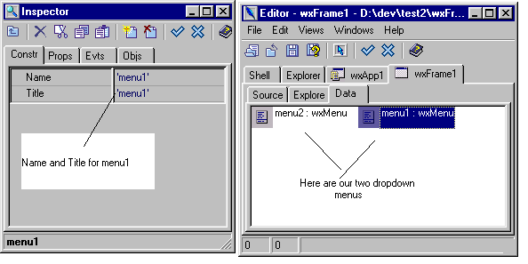
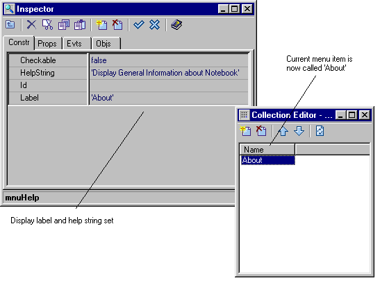
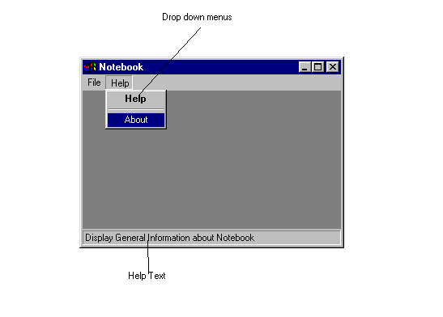

2.4 Add a Menu Bar
The next component we are going to add to the application is a
menubar. A menubar is a common component on windows programs. Our
menu bar will contain two entries, File and Help. Selecting one
of these will display a dropdown menu. The user can select an
option from the drop down menu.
- Select the wxFrame1 tab in the Editor to ensure that we are
editing the Frame.
- Start the Designer, by selecting the designer button from the
Editor toolbar.
- The Designer option shows two windows. The Designer window
which is used for Layout is displayed. The Editor window will
create and switch to the 'Data' pane. The Data pane is used for drawing
menus.
- On the Palette select the tab called 'Utilities'. This tab
contains entries for special complex widgets components which are
used with frames. The dropdown menu (wxMenu) is listed in these
components.
- Move the mouse over the buttons. Balloon help should show
that one of these buttons represents the wxMenu control. This is
the control we want. Press this button.
- The button should change shading to indicate that it is
pressed. The Palette contains a checkbox to show the currently
selected component type. This should reflect wxStatusBar.

- Now move the mouse cursor over the Editor 'Data' pane. Press
the mouse left button in the Data pane. This will create a
dropdown menu for the frame. The menu will not be visible on the
frame. However, there will now be an entry on the Data pane.
- Repeat the procedure. You should now have two wxMenus in the
Data Pane, called menu1 and menu2. Select menu1 using the mouse.
The Inspector will now display the Name and Title for menu1.

- Edit the name of the first wxMenu to call it mnuFile. Call
the second wxMenu mnuHelp. Set the titles to File and Help
respectively.
- Select the menu, mnuHelp. Select the Properties pane in the
Inspector. Click to edit the value of 'Items'. The field will
show a button with 3 dots. Click the button. This opens the
'Collection Editor'. The Collection Editor is used to add items
to our menus.
- Press the 'New' button on the Collection Editor. This creates
a new menu item within the dropdown menu. This becomes the
current item in the Inspector.
- Edit the field 'Label'. Set the name from 'item0' to
'About'.
- Edit the field 'Help String'. Set the value from 'item0' to
'Display general information about Notebook'.
- The Collection Editor toolbar contains a 'Refresh' button.
Press this button to see the Inspector change in the Collection
Editor window.

- In the Inspector, select the Events Pane. This is the pane used
to configure events. We need to configure the action which occurs
when the 'About' menu item is selected. When the 'About' menu
item is selected, and event called 'EVT_MENU' is generated and
sent to our program. We must add a method to our class to
handle this event.
- The left hand side of the events pane shows the groups of
events which are available. For the menuitem, there is only
'MenuEvent' group. Select this group using the mouse.
- The right hand side of the events pane now shows the events in
the selected group. For the menuitem, there is only one event
EVT_MENU in the 'MenuEvent' group. Doubleclick on this Event
using the mouse.
- The bottom of the Events pane shows the event handlers in
your application for the current component (the 'About' menuitem).
You should now have a new handler called OnMnuhelpitems0Menu.
This is the name of the method which will be invoked when the
'About' option is selected from the Help menu.
- Notice the naming of the event handler. Boa Constructor
generates the names in this manner. The event is the last part
(Menu). The component is the middle part and here it is the
items0 sub-component of the mnuHelp component. Finally, Boa
Constructor follows the convention of prefixing all event
handlers with the word 'On'.
- Close the collection Editor.

Now we must repeat the process to add options to the file
menu.
- From the 'Data' pane in the Editor, select the second menu,
'mnuFile'.
- In the Inspector select the Properties Pane. Click to edit
the menu items. Click on the '...' button to bring up a
Collection Editor for the 'menuitems'.
- Use the Collection Editor New button to create five menu
items.
- Select each menu item in turn, and label them 'Open', 'Save',
'Save As', 'Close' and 'Exit'. Enter some help text for each menu item.
Press the Collection Editor Update button to display the new
labels.
- Select each menu item in turn. For each item select the
Events pane in the Inspector. Add an event handler for EVT_MENU
to each item.
- Close the collection Editor.
Now we are going to create the menubar
- On the Palette window, select the 'Frame bars' pane. On this
pane select the menubar component.
- Move the cursor over the Editor 'Data' pane. Click the left
mouse button on this pane to add a menubar called 'menuBar1' to
the application. Select the new menubar.
- Select the Properties pane in the Inspector. From the
Properties pane select to edit the field 'Menus'. This will open
a Collection Editor.
- Add two Menus to the menubar using the collection Editor.
Select menu0. In the Inspector Constructor Pane, edit the 'Menu' field. This is a
pop-up menu, with three items, the wxMenu() constructor, and our two
dropdown menus. Set the value to File. Set the title to
'File'. This makes the mnuFile menu the first dropdown menu on the menubar.
- In the Collection Editor select the second menu. Repeat the
process to link menu1 to the Help dropdown menu, with the label
'Help'.
- Close the collection Editor.
- Select the main Frame, wxFrame1 on the Designer. The frame
should now be the current control in the Inspector.
- Select the Properties pane in the Inspector. Edit the field
'MenuBar'. This is a pop-up menu. Select your new menubar
self.menuBar1. This property chooses which menuBar to associate with
the frame.

- Save the changes using the Post button on the Editor. The
Designer should close.
- Save the source code for your generated source file
wxFrame1.py
- Run the program. You should now see that the menus and the
status bar. When you move the mouse over a menu option, the help
text should appear in the status bar.
